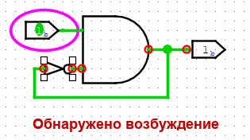

Ошибки при возбуждении
Алгоритм просчёта значений, который обычно работает тихо, без проблем, станет очень заметным, когда вы создадите схему, которая возбуждается.

В данный момент эта схема в стабильном состоянии. Но если вы измените значение на входе на 1, то схема фактически войдёт в бесконечный цикл. Через некоторое время Logisim просто сдастся и покажет сообщение "Обнаружено возбуждение", говорящее вам, что он считает, что схема возбуждается.

Он будет показывать значения, которые были, когда он сдался. Эти значения будут выглядеть неправильными - на этом снимке экрана элемент И выдаёт 1, хотя на одном из его входов 0; или может быть, что у элемента НЕ на входе и на выходе 1.
Logisim услужливо обводит красным каждое место, которое похоже участвует в возбуждении. Если участвующая точка лежит внутри подсхемы, то Logisim отрисует контур подсхемы красным.
Когда Logisim обнаруживает возбуждение, он останавливает дальнейшее моделирование. Вы можете снова включить моделирование, используя пункт Моделирование включено из меню Моделировать.
Logisim обнаруживает возбуждение с помощью довольно простого метода: если похоже, что при моделировании схемы слишком много итераций, то он просто сдаётся и сообщает о возбуждении. (Точки, которые он определяет как участвовавшие - это те, которые были затронуты как минимум в 25% итераций.) Таким образом, он мог бы ошибочно сообщить о возбуждении, например, если вы работаете с исключительно большой схемой; но она должна быть больше, чем любая построенная мной в Logisim. В любом случае, если вы уверены, что сообщение - ошибка, то вы можете настроить количество итераций, завершённых до появления возбуждения через вкладку Моделирование окна Параметры проекта.
Далее: Недостатки.